BIRT Project
New and Notable BIRT 2.0 M3
The BIRT team moves closer to the final 2.0 release this week by completing Milestone 3.
This Milestone has quite a list of improvements, some of which—like templates and libraries—can help Java report developers improve their productivity and help foster reuse within (and across) organizations. Others, such as the improvements to BIRT’s charting, both extend the functionality available and improve its usability.
As with all milestone releases, keep in mind that the product will continue to evolve.
The complete list of features for the final 2.0 release is available here.
A new chart builder is available in M3. This wizard is designed to expedite chart development by separating the process into three easy to use dialogs: Select Chart Type, Select Data, and Format Chart. SVG rendering of charts has also been added.
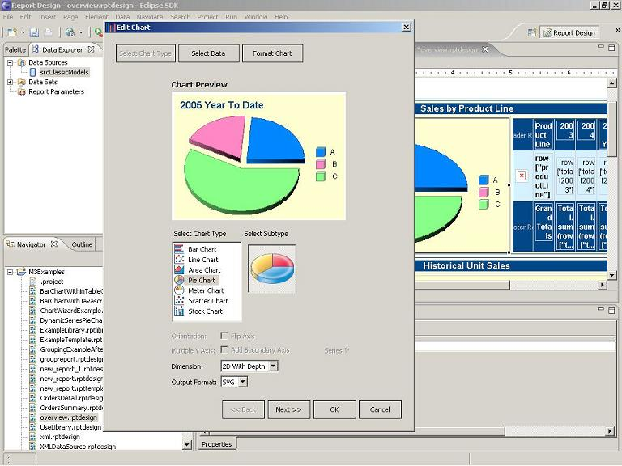Select Chart Type.
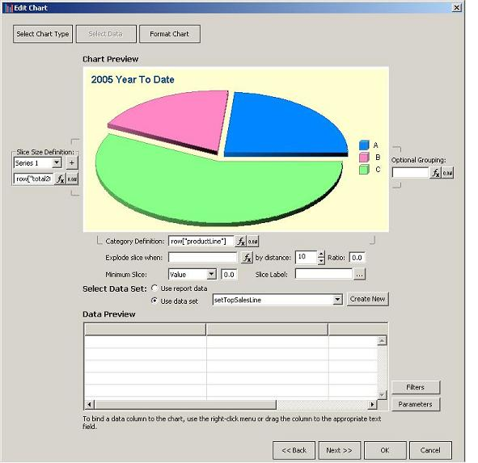Format Chart.
Additional functionality has been added to the Chart wizard to enhance support for user interactivity. As shown below additional events and actions have been added to support such things as scripting and drill-through.
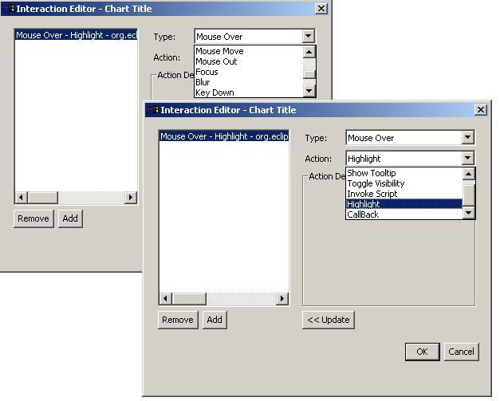BIRT now provides report developers the ability to build and publish report templates. Consistent look and feel can be difficult to achieve and maintain when building report applications. In addition, productivity and adoption by a broader range of report developers can be fostered by providing a pre-built report elements. Templates address these concerns and can range from skeletal outlines with predefined themes to complete reports.
Building a BIRT report template is very similar to building a standard BIRT report. One notable difference is that items within the report can be converted to template report items, which allow the template creator to set up indications where template user input is required.
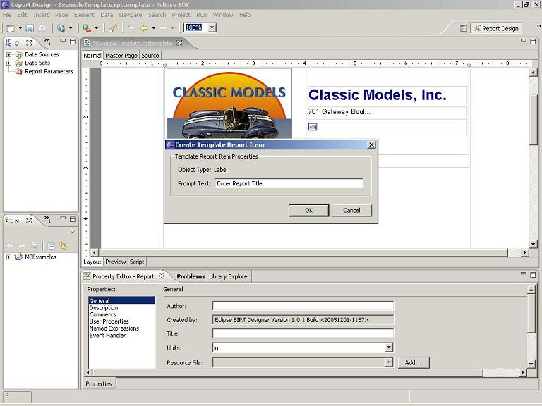 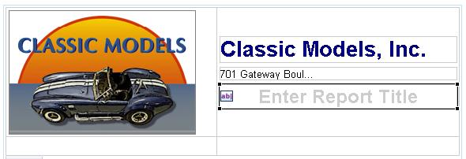Enter Prompts for Template Users.
The BIRT team has added a Template Publishing wizard to quickly put the template to use.
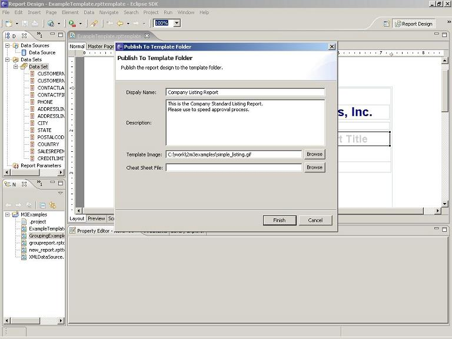Publish Wizard.
The Template wizard allows the designer to populate a display name, description and image file. After publishing, the template is available to use within the new report wizard.
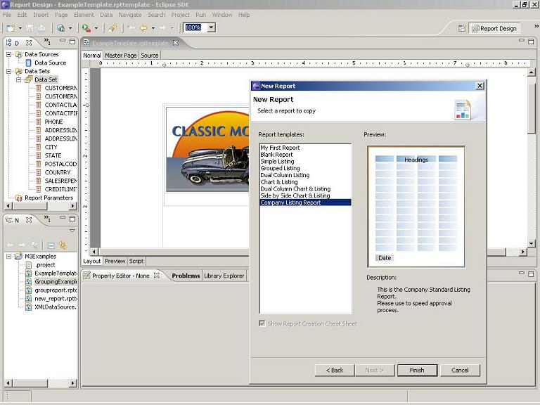Using a newly Created Template.
Milestone 3 introduces the concept of libraries to BIRT. With this feature, commonly used functions and report items can be encapsulated within a library. These libraries can then be imported into any number of reports for reuse. For example, a BIRT developer may wish to build a complex scripted data source and then encapsulate it within a BIRT library, freeing other members of the reporting team from implementing the same code.
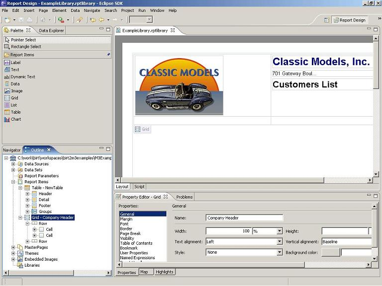Building a library.
A new project item type is now available for library creation. By dragging items from the palette to the Report Items node within the library Outline, the report developer can customize these components for reuse. Data Sources and Sets, Report Parameters, Report Items, Themes, Master Pages and Images can be added to the library.
After the library is created, it can be shared with report developers, who can import the library into their own designs.
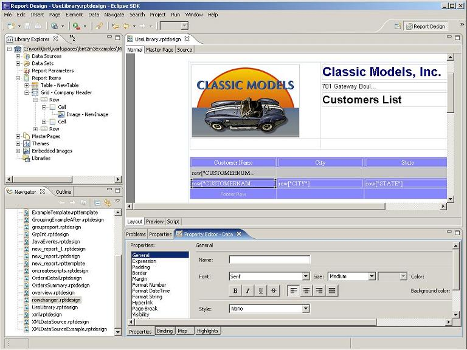Using a library.
The BIRT team has also added a new view to the BIRT perspective for browsing and importing the available libraries. Existing libraries within the workspace automatically show up in the Library Explorer. (In this screenshot, the Explorer has been pinned to the left side with the Palette and Data Explorer.) Using a library is as easy as importing it and then dragging the desired items to required report location.
Reports that reference libraries automatically update when executed. This is very useful in cases where business or technical changes require report rework. For example, imagine that a database schema changes or the company logo is altered. If these details are encapsulated in libraries, only the library would need to change and all referencing reports would be automatically updated to reflect the changes.
Building on the existing drivers that BIRT supplies, M3 delivers an XML ODA for retrieving XML data. The data can be streamed or reside within a file. This driver uses XPath syntax for XML to relational data mapping.
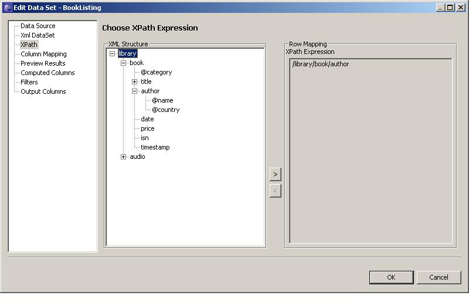Use XPath expression to map an XML node to a row.
Use XPath syntax to map node and attribute values to columns.
M3 offers a new URL Builder to quickly support summary to detail Drill-through linking as well as standard Bookmark and URL creation.
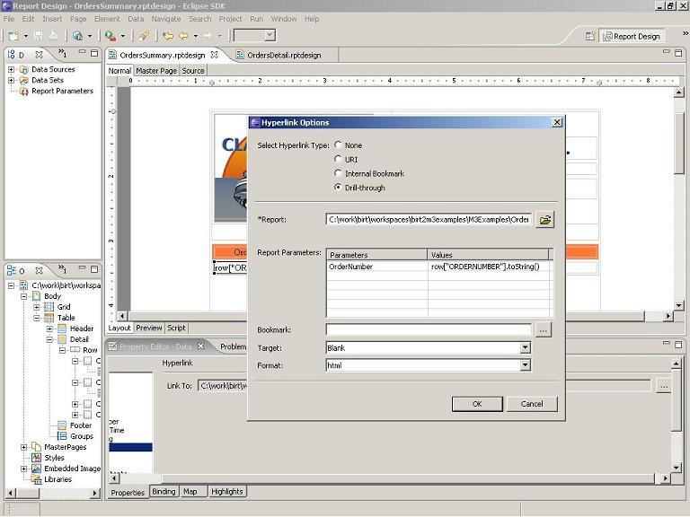Define the URL.
Drill-through Illustration.
Several improvements have been added to support advanced aggregate, filtering and sorting of report data. For example, computed columns can now use aggregate functions.
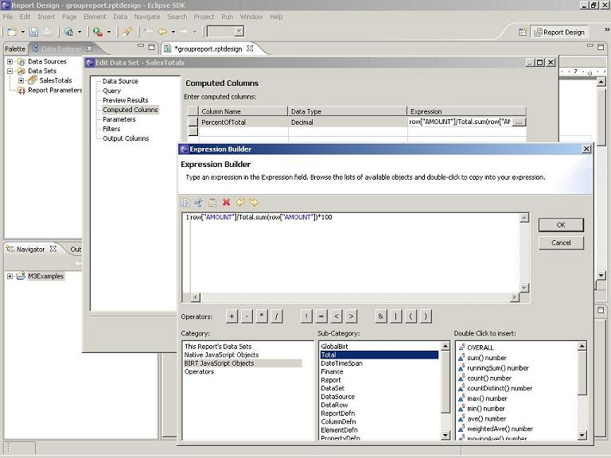Computed column with aggregation.
In addition, the group dialog now supports adding multiple sorting and filtering expressions.
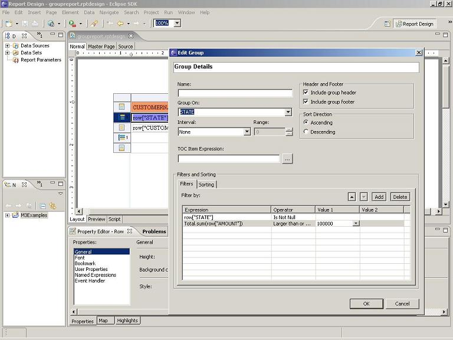New Filtering and Sorting tabs.
M3 includes an enhanced data engine with the ability to process large data sets via a combination of memory and disk cache. The BIRT team has done tests that show that the engine can now handle reports of well over a million rows with linear response time and bounded memory usage.
BIRT has also incorporated the iText PDF library to improve PDF generation performance.